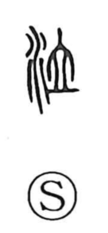

泣

Uncategorized
Kun: naku | On: kyuu
to cry ・ to weep
Explanation
Shirakawa sees 泣 as a phono-semantic character: the water element 氵 summons the image of tears, while 立 functions as the phonetic that guides the on-reading. He places 立 within the lai (来母) phonological group, in which an original l-initial often shifts to k in related graphs—much as 呂 (ryo) corresponds to 莒 (kyo) and 里 (ri) to 悝 (kai)—so 立 (ryū) underlies the kyū of 泣. The word denotes quiet, voiceless weeping, as in the Shuowen gloss “to shed tears without a voice,” and it appears in expressions like 泣血, evoking grief so intense that one is said to “weep blood.”